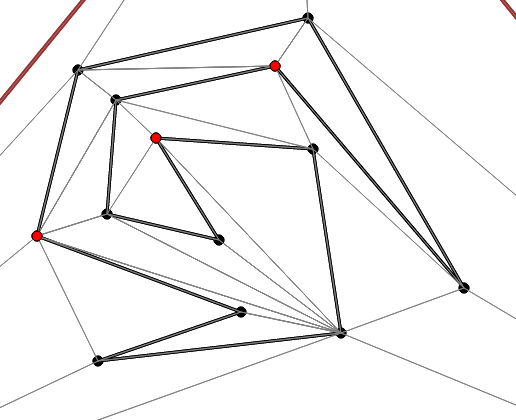
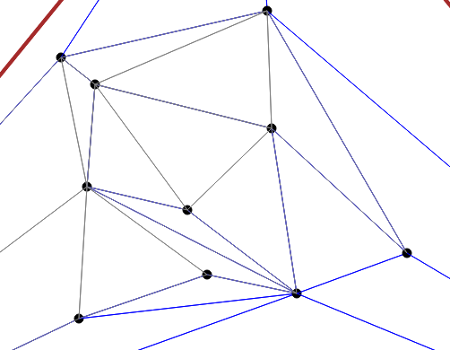
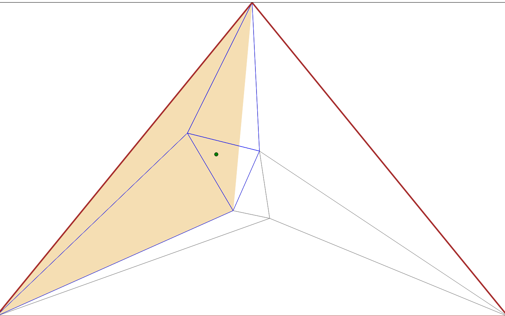
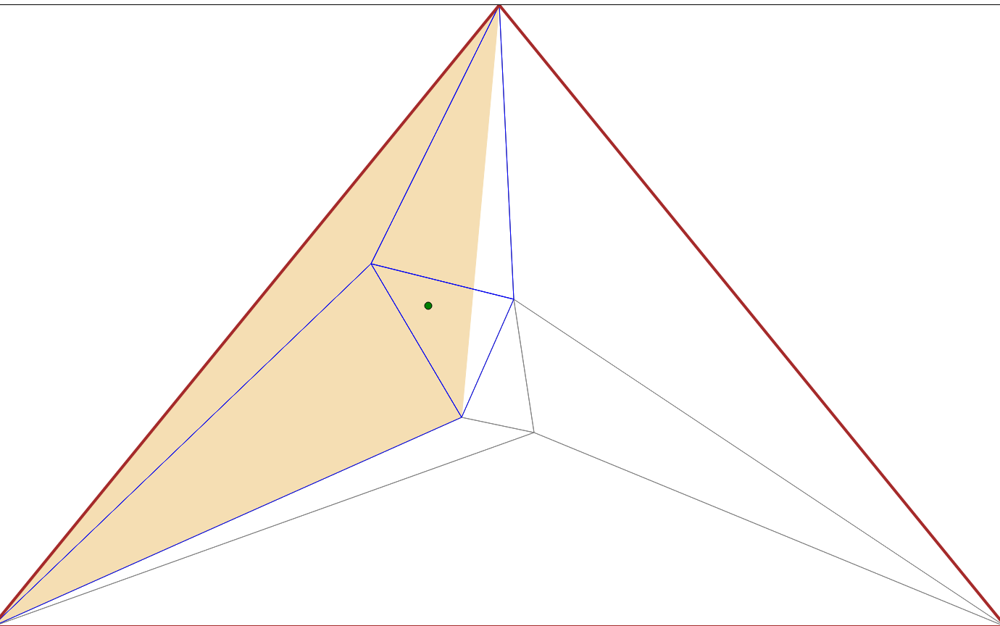

Kirpatrick Point Location
The simplest way to perform point location is to use the plum line algorithm. Plum line is a very simple algorithm that runs in O(n) time. In plum line, you shoot a ray in an arbitrary direction from the query point to infinity. Record the number of times the ray intersects a polygon. If this number is odd, then the point is inside of the polygon. If not, then the point is outside of the polygon.
Now this works well, however it is not fast enough if you are testing the location of many points. Kirpatrick's algorithm runs in O(log n) time after O(n) preprocessing. One thing to note is that if the polygon has holes, then the preprocessing will take O(n log n) time.
Preprocessing
The first step in the preprocessing is to triangulate the polygon. This is the most computationally expensive step. There exists an O(n) triangulation algorithm for simple polygons without holes, however, it is incredibly complicated and difficult to implement. Therefore, most implementations will use the more simple O(n log n) algorithm (triangulating with monotone polygons).
The next step is to surround the polygon with a triangle. This allows for a simple, O(1) sanity check of whether the point could be inside of the polygon. It does not matter how much extra space is between the polygon and the outer triangle, as long as the polygon is completely contained within the triangle. It is trivial to find this triangle in O(n) time by simply sweeping the 3 lines of an equilateral triangle from infinity towards the polygon.
Next, find the convex hull of the polygon. This can be done in O(n) time using Melkman's convex hull algorithm. Triangulate each pocket of the polygon. Then, triangulate between the convex hull and the outer triangle. This can be done in linear time by finding the tangents from each vertex of the outer triangle to the convex hull of the polygon. Triangulating between the tangents is trivial.
Note that when triangulating, each triangle should have a mark denoting whether it is inside of the polygon or not.
For the next step, you first need to convert the triangulation into a graph where the vertices are nodes and the triangle edges are graph edges. The next step is to find an independent set of low degree vertices. A set of vertices is independent if and only if there are no edges between any of the vertices in the set. For this algorithm, all of the vertices must also have degree less than or equal to 8.
It can be shown using Euler characteristic that at least n/2 vertices in the triangulation will have degree less than or equal to 8. To see a proof of this fact, check out page 108 of David Mount's Computational Geometry notes. Since each vertex in the independent set can have 8 neighbors and there are at least n/2 candidates for the independent set, the independent set must contain at least n/18 vertices. Therefore, by removing an independent set at each step, we are removing a constant fraction of the input data (1/18). By doing a linear amount of work at each step of the algorithm, the total running time is O(n).
Now find and remove an independent set of low degree vertices. Note that the independent set should not include any of the 3 vertices from the outer triangle. This will leave a series of star-shaped holes in the polygon that will be larger than triangles. Retriangulate these holes. Note that the number of new triangles in the hole is at most 6 (since the vertex has degree less than or equal to 8). Now compare the new triangles (from the holes) with the old triangles (connected to a vertex in the removed independent set). For each new triangle, determine which of the old triangles intersect it. Keep pointers to those triangles. Unchanged triangles should have a pointer back to a copy of themselves.
Here is an example of an independent set (highlighted in red). As you can see, there are no edges between red vertices. The thick black lines represent the polygon boundaries. The thin gray lines represent the triangulation.
Now here, you can see the result of removing the independent set. Notice the holes left where each red point was.

Then each hole is retriangulated.
Continue to find and remove the independent sets until you are only left with the outermost triangle. At this point, the preprocessing is done and you are left with a data structure similar to a tree. Each independent set removed creates a level in the tree. The references to overlapping triangles form the tree edges. The root of the tree is the outermost triangle, whereas the lowest level of the tree is the original triangulation. One important thing to note is that the height of the tree will be O(log n).
Locating a point
Let p be a point to locate. Now we can simply traverse down the tree of our data structure. At each level we know which current triangle the point is inside. When going to the next level of the tree, compare p to each of triangles that "overlapped" the current triangle. Note that this is a O(1) operation since there are at most 6 "overlapped" triangles. By repeating this process, you will eventually reach the original, full triangulation. At that point, you will know which of those triangles p falls in. Since each triangle in the original triangulation kept a mark as to whether it was inside of the polygon, we can tell in constant time whether the point is in the polygon.
At each level of the tree, we are spending O(1) time. Since there are O(log n) levels of the tree, the entire point location takes O(log n) time.
Here are 2 steps of the point location algorithm:
 
The green point is the query point. The beige triangle represents the triangle
from the higher level in the DAG that contained the queried vertex. The blue
color triangles are the triangles in the current level that overlap the beige
triangle. As you can see, the beige triangle in the second picture is one of the
blue triangles from the first picture.

The green point is the query point. The beige triangle represents the triangle
from the higher level in the DAG that contained the queried vertex. The blue
color triangles are the triangles in the current level that overlap the beige
triangle. As you can see, the beige triangle in the second picture is one of the
blue triangles from the first picture.
My experience implementing the algorithm
Implementing this algorithm involved several subproblems. There were many times
when I could have solved a problem asymptotically fast, but decided not to for
simplicity sake. The first subproblem
was triangulation. I could have used the monotone polygon method, but that was
more complicated than the
Ear
Clipping method. I went with Ear Clipping. This turned out to be
significantly harder than I expected. Finding a diagonal from a reflex vertex
was non-trivial. I needed functions for segment intersection, radial sweep, and
angle bisection. I
first shot ray out from the vertex and found the first segment that intersected
it. I then radially swept within the triangle formed by the starting vertex
and both sides of the segment. I needed to find the two radially closest points
to my original ray. Until I discovered and played around with the
atan2 function, I had a lot of
bugs finding the closets points. Unlike a normal arc-tangent, atan2
takes in an x and y parameters and then returns a value between -π and π.
There were also differences in implementation depending on whether the polygon was clockwise or counter-clockwise.
Once I had a findDiagonal function, it was not as hard to implement
the triangulate function. Determining whether a point was an ear could be done
in linear time by seeing if any points were within the triangle formed by the
point and its neighboring segments. If the point was not an ear, I found a
diagonal from that point and then recursed on both sides (making sure to pick a
new point somewhere in the middle of each side).